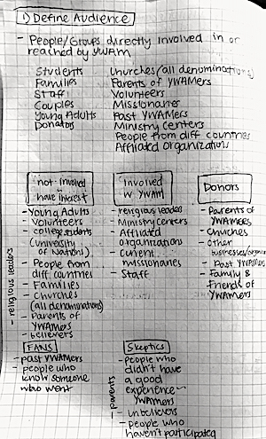
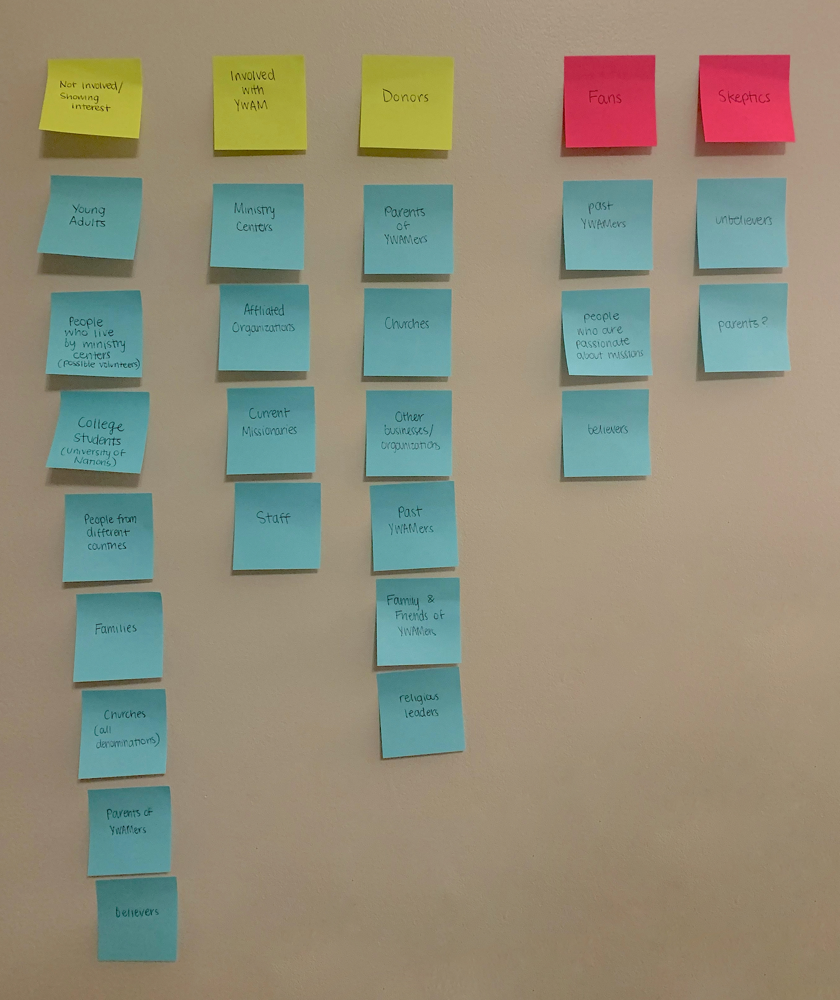
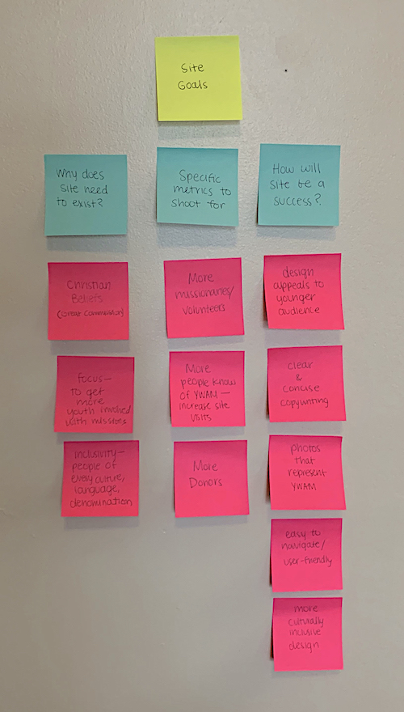
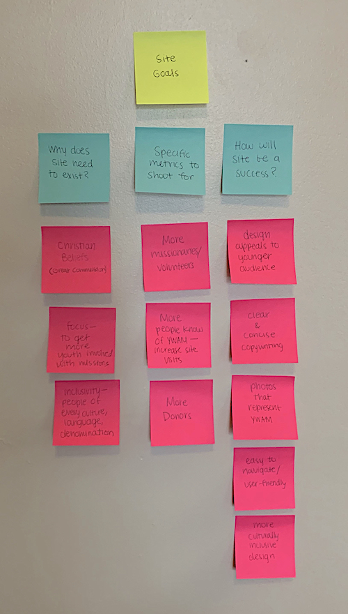
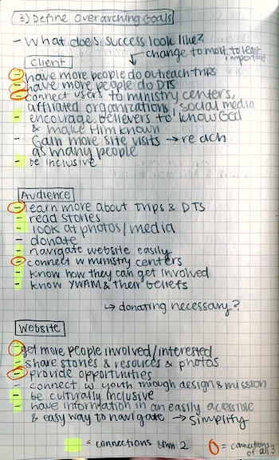

Audience and Goals
Subtitle here.
Audience

To have a successful re-designed website, the next step of the process was to learn about the audiences reached by YWAM.
Based off of their website and my primary and secondary research, I was able to make a list of my initial thoughts of the different people and groups that I thought could be apart of YWAM’s audience. Once I finished this list, I was able to reference it in order to make a new list to break down and to expand my original thoughts into sub-groups. This allowed me to see the broader perspective of the audience. Through these sub-groups, I took my previous thoughts and divided them into the groups and think through even more ideas that I did not consider before.

I decided that “Not-Involved/Have Interest”, “Involved with YWAM”, and “Donors” were groups that best represented the broad scope of the audience and allowed for all of the different people and groups to be represented. “Fans” and “Skeptics” were also added to think through who is on YWAM’s side and who I need to get on their side through the process of the re-design.
After creating these lists, I mapped out the sub-groups with sticky notes. After referencing my research and my previous lists, I edited my list down to what I thought best represented YWAM’s audience.
Site Goals
The main objective was to better understand the purpose of the site and how it could be successful. Through this, I asked myself questions about the website, the audience, and YWAM in order to figure out how I could solve this challenge.
These goals helped me understand the audience better by seeing the context of why people visit the site and how in turn the site can better serve the audience. Writing down goals also helped me stay focused on the audience and mission of YWAM in order to make the site successful.
 

Overarching Goals

Through my research of goals of the client, audience, and wesbite, I next focused on the question of why this website should exist and how it would be successful from a client’s perspective, an audience’s perspective, and a website’s perspective. This allowed me to find overlapping goals to see what was important and then eliminating what I thought was important at first but actually might not be now. For example, donating was one of my sub-groups when specifically researching for the audience but after this exercise of looking at goals, I found that it might not actually be as important as I thought. Once I interview a staff member from YWAM, I will be able to gain a better perspective of how donating affects YWAM.
I also was able to see the overlapping of goals across the client, audience, and website goals to understand what was needed in the re-design. I found connections between just two of the groups and then I found connections that were across all 3 groups.
I then organized the goals and put them in order of most important to least important for the specific sub-group. These goals will inform more decisions related to my design.
Client
- Have more people do Outreach Trips and DTS (Encourage believers to know God and make Him known)
- Gain more site visits/Reach as many people as possible
- Be inclusive
- Connect users to ministry centers, affiliated organizations, and YWAM’s social media
Audience
- Learn more about Outreach Trips and DTS
- Easily know YWAM and their beliefs and how to get involved
- Read stories and look at photos/media
- Navigate website easily
- Connect with ministry centers
- Donate
Website
- Get more people involved/interested through the opportunities provided
- Be culturally inclusive
- Share stories, resources, and photos
- Make information easily accessible by simplifying and providing an easy way to navigate
- Connect with a younger audience through the design of website and mission of YWAM
Specific Goals
| Users | Goals | Content |
|---|---|---|
| College Aged People |
|
|
| Past YWAMers |
|
|
| Current Missionaries/Staff |
|
|
| Interested Families/Couples |
|
|
| Churches |
|
|
Summary of Goals
After narrowing down goals, I now know how to successfully meet the needs of YWAM’s audience.
Also, because YWAM is not associated with a particular denomination or region of the world, there is a variety of people that can be involved. This is a distinguishing quality of YWAM in comparison to similar organizations. While it could present challenges, YWAM’s message of inclusion has been clearly displayed throughout research and now through learning more about their audience. Because of this, it is key that a site allowing for inclusion should be apart of their re-design. After learning about culturally inclusive design in my secondary research, the design and website as a whole I can confidently reach all of the groups.